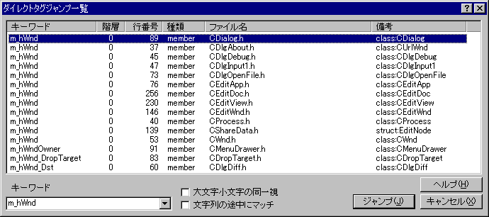

キーワードを指定してタグジャンプ
ダイアログを表示して、指定したキーワードを含むタグジャンプ一覧を抽出してジャンプできます。(sakura:1.5.3.1以降)

キーワード
タグジャンプするキーワードを入力します。
□大文字小文字の同一視
チェックすると英大文字小文字を区別しなくなります。
□文字列の途中にマッチ
チェックすると、キーワードがタグ名の途中に含まれるものも一覧に表示します。
前へ
前のタグジャンプ一覧を表示します(30個を超えたとき)。(sakura:2.0.5.0以降)
次へ
次のタグジャンプ一覧を表示します(30個を超えたとき)。(sakura:2.0.5.0以降)
ジャンプ
リストで指定したファイルにダイレクトタグジャンプします。
キーワードを指定してタグジャンプを行う場合は、あらかじめタグファイルの作成でタグファイルを作成しておく必要があります。
 参照ダイレクトタグジャンプの使い方
参照ダイレクトタグジャンプの使い方
■マクロ構文
・構文: KeywordTagJump( str1 :String );
str1 キーワード
・記録: ×
・解説:
「キーワード」を設定して、「ダイレクトタグジャンプ一覧」ダイアログを表示します。